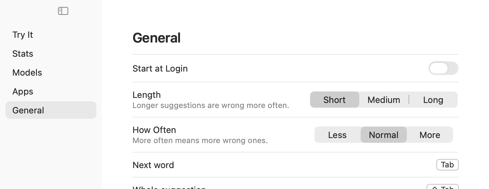

Tab takes a word
As soon as possible,
For macOS 26 on Apple Silicon
Grey text finishes your sentence in almost any app. Tab takes it. Korean and English, on your Mac.
brew tap hrsong99/halftype && brew trust hrsong99/halftype
brew install --cask halftype
Real suggestions, on sentences it does well. Not always this good.
Most tools go quiet while you compose Hangul. Halftype suggests from 하, then Tab presses the keys left, so your input method finishes the syllable.
Tab presses
Keystrokes saved across whole messages. Exact matches only.
Accessibility. No Screen Recording.
Only model downloads and a daily update check you can turn off.
Settings and models. No text, no logs.
Skipped.

5.6× smaller
6× less
M5, 16 GB. Memory is macOS’s footprint for each app. Cotypist 2026.5.2, 2026-11-09. Halftype’s numbers are its default model, from scripts/e2e.sh --measure.
An early release. Found something? Open an issue.
macOS 26 on Apple Silicon.
Apple’s 2-Set Korean only.
Weaker than English. Kanana 1.5 helps.
Mid-line, and during Secure Input.
Mostly. Only some are tested.
Yes, with Swift 6.2.
회색 글자로 다음 말을 제안합니다. 모델은 내 Mac에서 돌아갑니다.
Tab은 다음 단어, Shift-Tab은 전체, Esc는 닫기입니다.
조합 중인 글자에서도 제안합니다.
입력 중 0.56 GB, 5분 쉬면 79 MB.
글은 저장하지 않습니다. 비밀번호 칸은 건너뜁니다.
macOS 26, Apple Silicon, 두벌식.